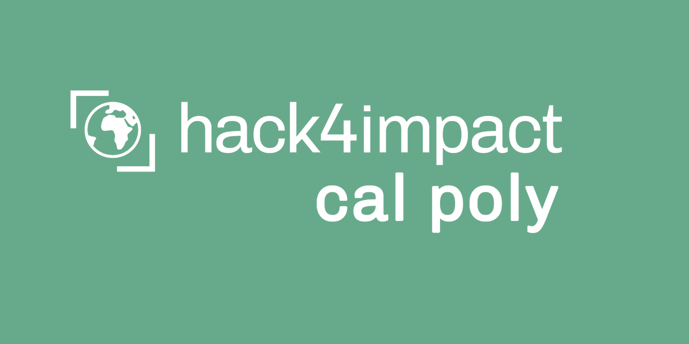

Joining Hack For Impact
Published: Fall 2025
Starting my journey as a first-year Computer Science student at Cal Poly SLO, I made one of the most impactful decisions of my academic career - joining Hack For Impact. This organization has opened doors to using technology for social good and connected me with like-minded peers passionate about making a difference.
What is Hack For Impact?
Hack For Impact is a student-run nonprofit that partners with other nonprofits and social impact organizations to develop technological solutions for their challenges. We believe that technology should be accessible and used to create positive change in our communities.
Why I Joined
- Purpose-Driven Development: Building applications that solve real problems for real people
- Learning Opportunity: Working with experienced developers and learning industry best practices
- Community Impact: Using my skills to help nonprofits achieve their missions more effectively
- Professional Growth: Gaining experience in project management, client communication, and team collaboration
My Experience So Far
In my first quarter with Hack For Impact, I've been working on the UI/UX and Developer bootcamps to build a strong foundation in full stack development. Currently I have landed a role as a designer for Hack For Impact.
Skills I'm Developing
Through Hack For Impact, I'm gaining experience with:
- Full-stack web development using modern frameworks
- Database design and management
- User experience design and testing
- Agile development methodologies
- Client communication and project management
- UI/UX design and prototyping with Figma
Being part of Hack For Impact has shown me that programming isn't just about writing code - it's about understanding problems, collaborating with others, and creating solutions that make a meaningful impact. I'm excited to continue growing with this amazing organization and contributing to projects that matter.